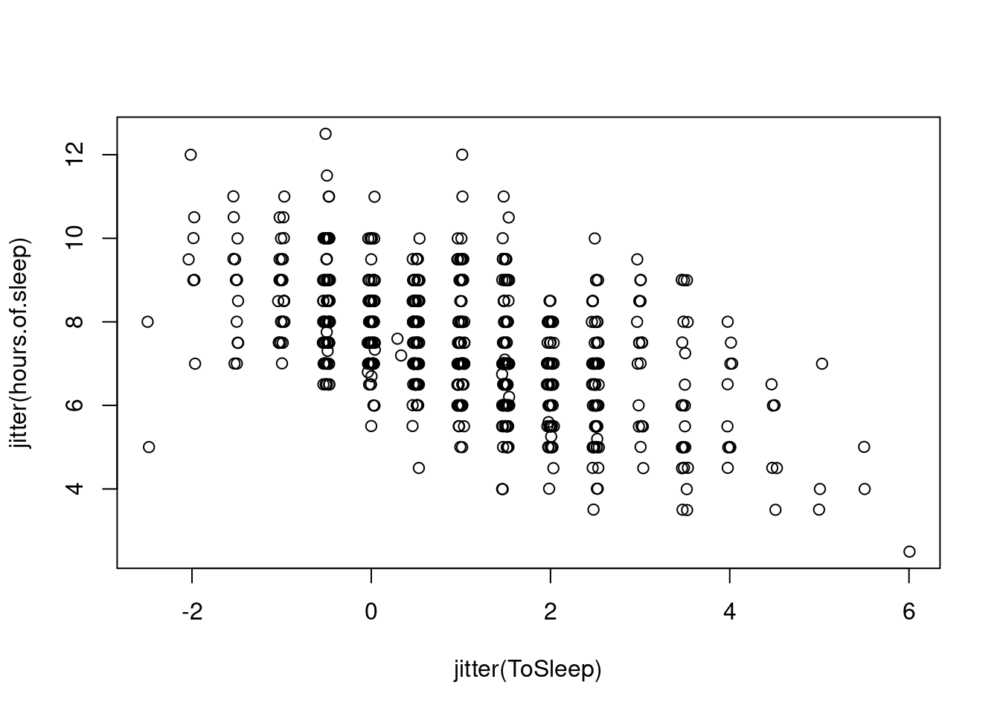
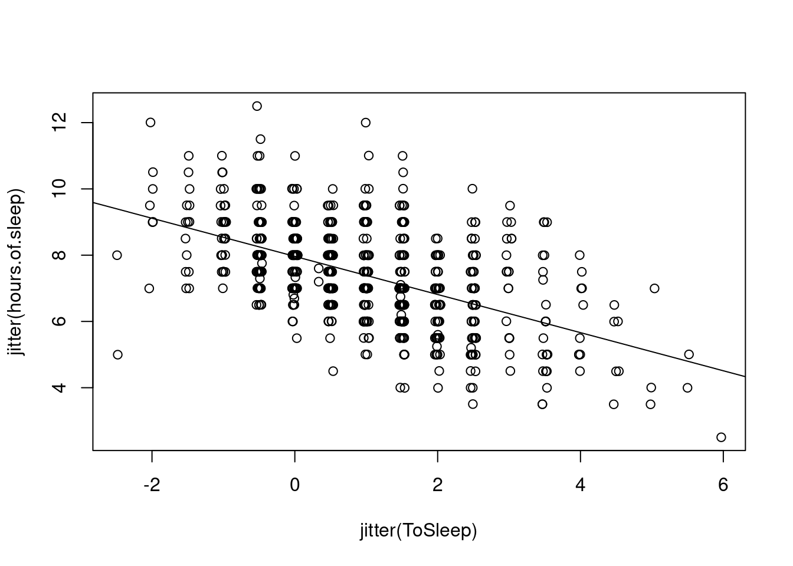

library(LearnBayes)Ejemplos
1. An Introduction to R
1.2 Exploring Student Dataset
1.2.1 Introduction to the Data set
To illustrate some basic commands for summarizing and graphing data, we consider answers from a sheet of questions given to all students in an introductory statistics class at Bowling Green State University.
1.2.2 Reading the Data into R
# studentdata = read.table("studentdata.txt", sep = "\t", + header = TRUE)
data(studentdata) # Datos desde la biblioteca de LearnBayes
studentdata[1, ] # Imprime primer renglón Student Height Gender Shoes Number Dvds ToSleep WakeUp Haircut Job Drink
1 1 67 female 10 5 10 -2.5 5.5 60 30 waterattach(studentdata) #Para referirnos a las variables por nombre1.2.3 R Commands to Summarize and Graph a Single Batch
table(Drink)Drink
milk pop water
113 178 355 barplot(table(Drink),xlab="Drink",ylab="Count")hours.of.sleep = WakeUp - ToSleep
summary(hours.of.sleep) Min. 1st Qu. Median Mean 3rd Qu. Max. NA's
2.500 6.500 7.500 7.385 8.500 12.500 4 hist(hours.of.sleep,main="")
1.2.4 R Commands to Compare Batches
boxplot(hours.of.sleep~Gender, ylab = "Hours of Sleep")female.Haircut=Haircut[Gender=="female"]
summary(female.Haircut) Min. 1st Qu. Median Mean 3rd Qu. Max. NA's
0.00 15.00 25.00 34.08 45.00 180.00 19 male.Haircut=Haircut[Gender=="male"]
summary(male.Haircut) Min. 1st Qu. Median Mean 3rd Qu. Max. NA's
0.00 0.00 12.00 10.54 15.00 75.00 1 1.2.5 R Commands for Studying Relationships
plot(jitter(ToSleep),jitter(hours.of.sleep))
fit=lm(hours.of.sleep~ToSleep)
fit
Call:
lm(formula = hours.of.sleep ~ ToSleep)
Coefficients:
(Intercept) ToSleep
7.9628 -0.5753 plot(jitter(ToSleep),jitter(hours.of.sleep))
abline(fit)
1.3 Exploring the Robustness of the t Statistic
1.3.1 Introduction
Suppose one has two independent samples, \(x_1 , ..., x_m\) and \(y_1 , ..., y_n\) , and wishes to test the hypothesis that the mean of the \(x\) population is equal to the mean of the \(y\) population:
\[H_0: \mu_x=\mu_y\]
Let \(\bar X\) and \(\bar Y\) denote the sample means of the \(x\)s and \(y\)s and let \(s_x\) and \(s_y\) denote the respective standard deviations. The standard test of this hypothesis \(H_0\) is based on the \(t\) statistic
\[T=\frac{\bar X - \bar Y}{s_p \sqrt{1/m+1/n}}\]
where \(s_p\) is the pooled standard deviation
\[s_p=\sqrt{\frac{(m-1)s_x^2+(n-1)s_y^2}{m+n-2}}\]
Under the hypothesis \(H_0\) , the test statistic \(T\) has a \(t\) distribution with \(m+n−2\) degrees of freedom when:
both the \(x\)s and \(y\)s are independent random samples from normal distributions
the standard deviations of the \(x\) and \(y\) populations, \(σ_x\) and \(σ_y\) , are equal
Suppose the level of significance of the test is set at \(α\). Then one will reject \(H\) when \[|T| ≥ t_{n+m−2,α/2}\]
where \(t_{df,\alpha}\) is the \((1 − α)\) quantile of a \(t\) random variable with \(df\) degrees of freedom.
If the underlying assumptions of *normal populations and equal variances hold, then the level of significance of the t-test will be the stated level of \(\alpha\).
But, in practice, many people use the t statistic to compare two samples even when the underlying assumptions are in doubt. So an interesting problem is to investigate the robustness or sensitivity of this popular test statistic with respect to changes in the assumptions.
If the stated significance level is \(\alpha = .10\) and the populations are skewed or have heavy tails, what will be the true significance level?
If the assumption of equal variances is violated and there are significant differences in the spreads of the two populations, what is the true significance level?
1.3.2 Writin a Fuction to Compute the t Statistic
To begin, we generate some random data for the samples of \(x\)s and \(y\)s.
x=rnorm(10,mean=50,sd=10)
y=rnorm(10,mean=50,sd=10)
m=length(x)
n=length(y)We compute the pooled standard deviation \(s_p\) and the the \(t\) statistic
sp=sqrt(((m-1)*sd(x)^2+(n-1)*sd(y)^2)/(m+n-2))
t.stat=(mean(x)-mean(y))/(sp*sqrt(1/m+1/n))we can write a short R function \(t\) statistic to compute the t statistic.
source("tstatistic.R")
print(tstatistic)function (x, y)
{
m = length(x)
n = length(y)
sp = sqrt(((m - 1) * sd(x)^2 + (n - 1) * sd(y)^2)/(m + n -
2))
t.stat = (mean(x) - mean(y))/(sp * sqrt(1/m + 1/n))
return(t.stat)
}We try the function by placing some fake data
data.x=c(1,4,3,6,5)
data.y=c(5,4,7,6,10)
tstatistic(data.x, data.y)[1] -1.937926Programming a Monte Carlo Simulation
Suppose we are interested in learning about the true significance level for the t statistic when the populations don’t follow the standard assumptions of normality and equal variances.
Given a particular choice of \(\alpha\), shape, spreads, and sample sizes, we wish to estimate the true significance level given by
\[ \alpha^T = P (|T| ≥ t_{n+m−2, α/2} ). \] Here is an outline of a simulation algorithm to compute \(\alpha^T\) :
Simulate a random sample \(x_1 , ..., x_m\) from the first population and \(y_1 , ..., y_n\) from the second population.
Compute the t statistic \(T\) from the two samples.
Decide if \(|T |\) exceeds the critical point and \(H_0\) is rejected.
One repeats steps 1–3 of the algorithm N times. One estimates the true significance level by
\[\hat \alpha^T=\frac{\text{number of rejections of } H_0}{N}\] ### 1.3.4 The Behavior of the True Significance Level Under Different Assumptions
Suppose we fix the stated significance level at \(α = .10\) and keep the sample sizes at \(m = 10\) and \(n = 10\). We simulate samples from the following populations, where the only restriction is that the population means be equal:
alpha=.1; m=10; n=10
# sets alpha, m, n
N=10000- Normal populations with zero means and equal spreads (\(σx = σy = 1\))
# sets the number of simulations
n.reject=0
# counter of num. of rejections
for (i in 1:N)
{
x=rnorm(m,mean=0,sd=1)
# simulates xs from population 1
y=rnorm(n,mean=0,sd=1)
# simulates ys from population 2
t.stat=tstatistic(x,y)
# computes the t statistic
if (abs(t.stat)>qt(1-alpha/2,n+m-2))
n.reject=n.reject+1
# reject if |T| exceeds critical pt
}
true.sig.level=n.reject/N # est. is proportion of rejections
true.sig.level[1] 0.1034- Normal populations with zero means and very different spreads (\(σx =1\), \(σy = 10\))
# sets the number of simulations
n.reject=0
# counter of num. of rejections
for (i in 1:N)
{
x=rnorm(m,mean=0,sd=1)
# simulates xs from population 1
y=rnorm(n,mean=0,sd=10)
# simulates ys from population 2
t.stat=tstatistic(x,y)
# computes the t statistic
if (abs(t.stat)>qt(1-alpha/2,n+m-2))
n.reject=n.reject+1
# reject if |T| exceeds critical pt
}
true.sig.level=n.reject/N # est. is proportion of rejections
true.sig.level[1] 0.114T populations, 4 degrees of freedom, and equal spreads
# sets the number of simulations
n.reject=0
# counter of num. of rejections
for (i in 1:N)
{
x=rt(m,df=4)
# simulates xs from population 1
y=rt(n,df=4)
# simulates ys from population 2
t.stat=tstatistic(x,y)
# computes the t statistic
if (abs(t.stat)>qt(1-alpha/2,n+m-2))
n.reject=n.reject+1
# reject if |T| exceeds critical pt
}
true.sig.level=n.reject/N # est. is proportion of rejections
true.sig.level[1] 0.0963- Exponential populations with \(μx = μy = 1\)
# sets the number of simulations
n.reject=0
# counter of num. of rejections
for (i in 1:N)
{
x=rexp(m,rate=1)
# simulates xs from population 1
y=rexp(n,rate=1)
# simulates ys from population 2
t.stat=tstatistic(x,y)
# computes the t statistic
if (abs(t.stat)>qt(1-alpha/2,n+m-2))
n.reject=n.reject+1
# reject if |T| exceeds critical pt
}
true.sig.level=n.reject/N # est. is proportion of rejections
true.sig.level[1] 0.0949- One normal population (\(μx = 10\), \(σx = 2\)) and one exponential population (\(μy = 10\)).
# sets the number of simulations
n.reject=0
# counter of num. of rejections
for (i in 1:N)
{
x=rnorm(m,mean=10,sd=2)
# simulates xs from population 1
y=rexp(n,rate=1/10)
# simulates ys from population 2
t.stat=tstatistic(x,y)
# computes the t statistic
if (abs(t.stat)>qt(1-alpha/2,n+m-2))
n.reject=n.reject+1
# reject if |T| exceeds critical pt
}
true.sig.level=n.reject/N # est. is proportion of rejections
true.sig.level[1] 0.1532In this brief study, it appears that if the populations have equal spreads, then the true significance level is approximately equal to the stated level for different population shapes. If the populations have similar shapes and different spreads, then the true significance level can be slightly higher than 10%. If the populations have substantially different shapes (such as normal and exponential) and unequal spreads, then the true significance level can be substantially higher than the stated level.
Since the true significance level in the last case is 50% higher than the stated level, one might be interested in seeing the exact sampling distribution of the t statistic.
m=10; n=10
my.tsimulation=function() + tstatistic(rnorm(m,mean=10,sd=2), rexp(n,rate=1/10))
# repeat this simulation 10,000
tstat.vector=replicate(10000, my.tsimulation())
# plot
plot(density(tstat.vector),xlim=c(-5,8),ylim=c(0,.4),lwd=3)
curve(dt(x,df=18),add=TRUE)
legend(4,.3,c("exact","t(18)"),lwd=c(3,1))